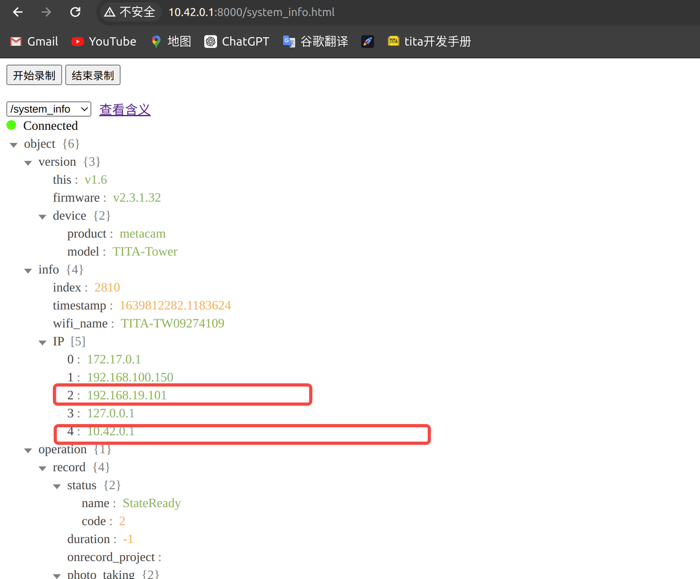
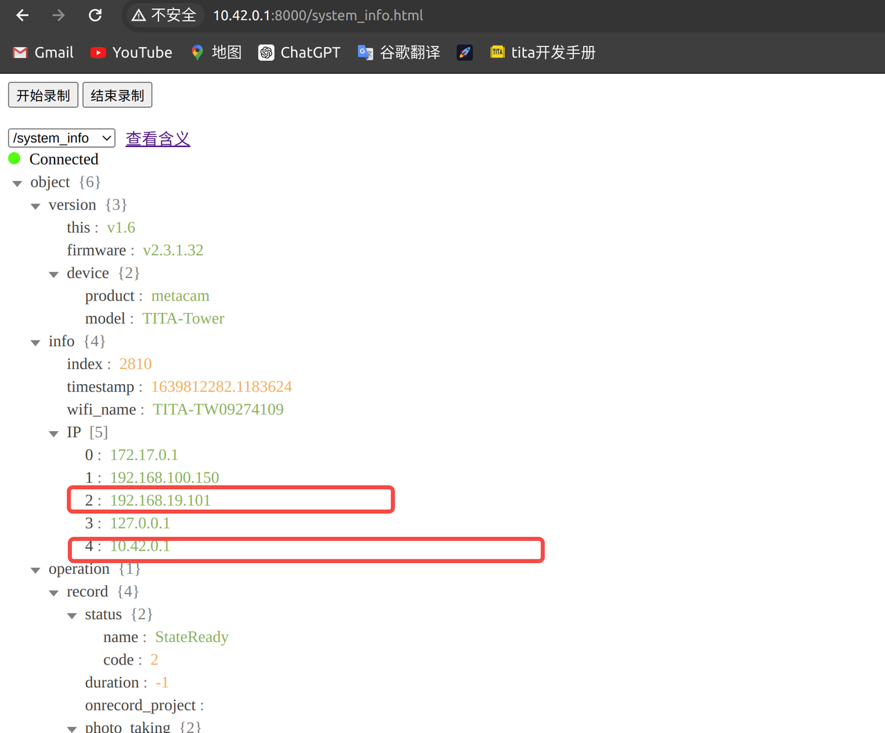
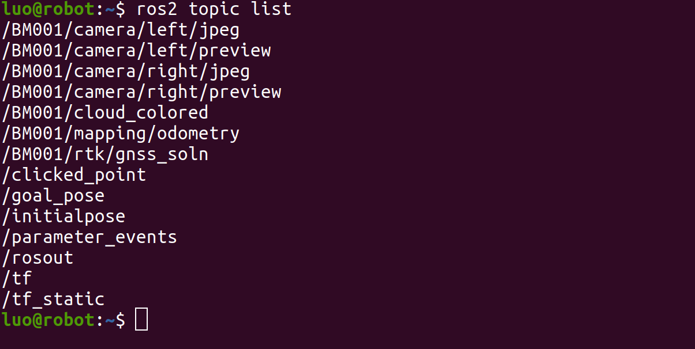
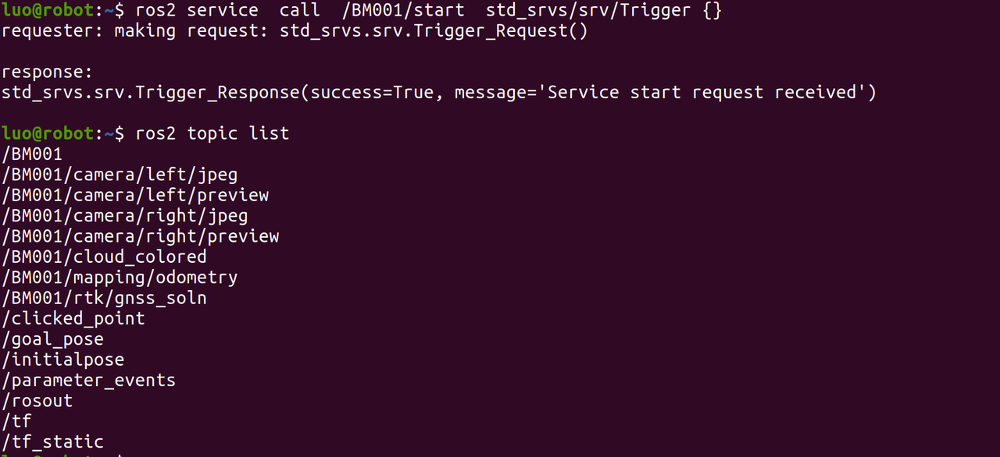
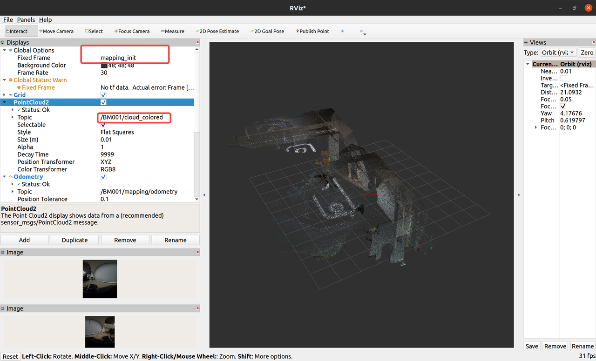

导航塔使用手册
1. 快速开始
1.1 准备工作
在使用导航塔之前，需要做以下准备工作：
安装、供电 导航塔通过TITA本身的DB25的外接接口供电，需要使用官方认证DB25连接线。 注意，禁止对DB25接口进行热插拔，否则会造成导航塔异常断电。
调试 导航塔支持以太网接口，通过网线连接导航塔和笔记本电脑，支持多机交互可视化调试。
查看IP 查看IP可以通过连接热点访问导航塔设备信息网页：http://10.42.0.1:8000
 
注意：
192.168.19.101为有线网口分配IP10.42.0.1为无线wifi分配的IP
1.2 环境配置
导航塔 ROS_DOMAIN_ID 默认是42，实现多机交互需要对调试机的 ROS_DOMAIN_ID 也设置成42，设置完成后，执行
source ~/.bashrc
1.2.1 测试设备通讯
开机后，导航塔上电，工作指示灯为蓝色，即待机状态，使用 ros2 topic list，可以看到以下话题：

2. 软件控制
开启软件功能
bool success
string message
ros2 service call start std_srvs/srv/Trigger "{}"

关闭软件功能
---
bool success
string message
ros2 service call stop std_srvs/srv/Trigger "{}"

实时输出
能够提供一个高精度的里程计信息
nav_msgs/msg/Odometry ros2 topic echo mapping/odometry
RTK的经纬度信息（国内）
sensor_msgs/msg/NavSatFix ros2 topic echo rtk/gnss_soln
GPS的经纬度信息（国外）
sensor_msgs/msg/NavSatFix ros2 topic echo gps/gnss_soln
彩色建图点云数据
sensor_msgs/msg/PointCloud2 ros2 topic echo cloud_colored
左侧相机压缩数据
sensor_msgs/msg/CompressedImage ros2 topic echo camera/left/jpeg
右侧相机压缩数据
sensor_msgs/msg/CompressedImage ros2 topic echo camera/right/jpeg
左侧相机预览数据
sensor_msgs/msg/Image ros2 topic echo camera/left/preview
右侧相机预览数据
sensor_msgs/msg/Image ros2 topic echo camera/right/preview
启动rviz
1 rviz2
